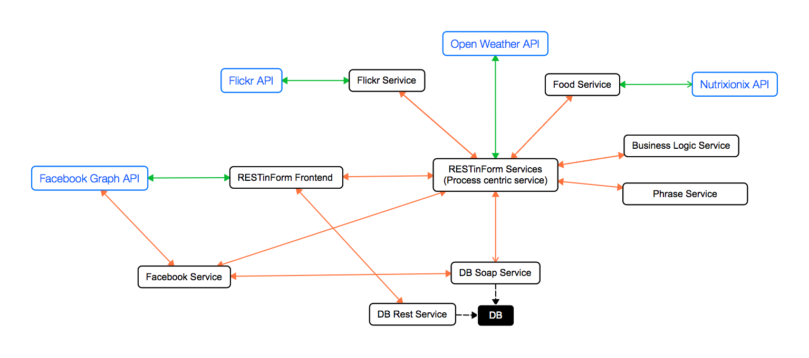

Here can be seen the map of our project. While services we developed have a black border, the external services have a blue one. The most important service is the RESTinForm Services which is actualy our Process centric service. Green arrow are requests that use API provided by external services. The red arrows represent the first process while the blue ones are part of the second process. As required each process send request to at least 3 different services. All the requests sent from/to a service are formatted in JSON. We chose this format because it is very lightweight.
 The project is based on four external services:token. Our services ask to the Facebook Graph API if a given token is valid. In the positive case an authenticated user sent the request, otherwise no other actions are authorized.callback=? parameter means that we are using a jsonp with a random callback generated by jQuery, the token parameter is used to authenticate a user with Facebook.
GET http://127.0.0.1:9091/project-director/weather?callback=?&token=<TOKEN>GET https://restindirectorservice.herokuapp.com/project-director/food?callback=<CALLBACK>&token=<TOKEN>jQuery30090583399275290333725555919781042774309986270964_1421931432535(<JSON RESPONSE>)token. This allows us to limit the use of all our developed services to only authenticated users. Our service is hosted in https://restinfacebookservice.herokuapp.com. The request must contain a token parameter as follows:
GET https://restinfacebookservice.herokuapp.com/project-facebook/auth?token=<TOKEN>status with a message and a code. GET https://graph.facebook.com/v2.2/me?fields=id,first_name,location&access_token=<TOKEN>